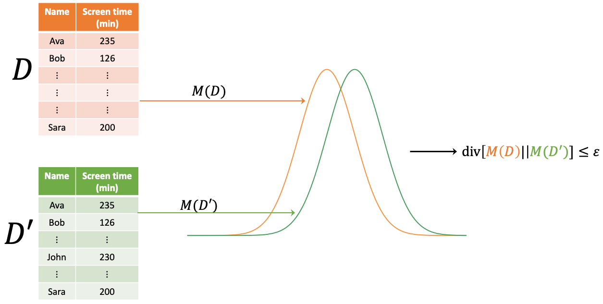

\((\epsilon,\delta)\)-differential privacy is a relaxation of pure \(\epsilon\)-differential privacy. The added \(\delta\) term, a small probability close to 0, permits minor deviations from the strict \(\epsilon\)-differential privacy, allowing for more utility in certain applications. More formally, a mechanism \( M \) is \( (\epsilon, \delta) \)-differentially private if \[ \Pr[M(D) \in O] \leq \exp(\epsilon) \times \Pr[M(D') \in O] + \delta \]. If \( \delta = 0 \), then \( (\epsilon, \delta) \)-DP is reduced to \( \epsilon \)-DP.
Tip \( (\epsilon, \delta) \)-DP mechanism may be thought of informally as \( \epsilon \)-DP with the probability of \( 1 - \delta \).
For two distributions \( P \) and \( Q \) over \( R \), the Rényi divergence of order \( \alpha > 1 \) is given by: \[ D_\alpha(P||Q) = \frac{1}{\alpha - 1} \log \mathbb{E}_{x\sim Q} \left[ \left( \frac{P(x)}{Q(x)} \right)^\alpha \right] \] where \( P(x) \) represents the density of \( P \) at \( x \) and all logarithms are natural. For \( \alpha = 1 \), \( D_1(P||Q) \) is defined as: \[ D_1(P||Q) = \mathbb{E}_{x\sim P} \log \frac{P(x)}{Q(x)} \] which is equivalent to the Kullback-Leibler divergence. It's worth noting the expectation is over \( P \), not \( Q \), and \( D_1(P||Q) \) might be finite when \( D_\alpha(P||Q) = +\infty \) for \( \alpha > 1 \). For \( \alpha = \infty \), the divergence is: \[ D_\infty(P||Q) = \sup_{x \in \text{supp } Q} \log \frac{P(x)}{Q(x)} \]
The term \( \sup \) represents the "supremum." Specifically, the supremum identifies the highest value a function can achieve. For a function that has a distinct maximum, this value will be the supremum. However, if there isn't a clear maximum, the supremum gives the smallest value that's still greater than any value the function can attain. Moreover, \( \text{supp} \) stands for "support." In the context of the probability distribution \( Q \), the support refers to the set of all points or outcomes \( x \) where \( Q(x) \) is not zero. As such, the divergence \( D_\infty(P||Q) \) determines the maximum logarithmic ratio of \( P(x) \) to \( Q(x) \) specifically for those \( x \) values where \( Q(x) \) isn't zero. The following function computes the Rényi divergence of order \( \alpha \) between two distributions \( P \) and \( Q \) over \( R \). The function assumes that \( P \) and \( Q \) are represented as lists of probabilities over the same set of outcomes. The function also assumes that \( P \) and \( Q \) are normalized, meaning that the sum of their probabilities is 1.
import math
def renyi_divergence(P, Q, alpha):
if alpha == 1:
return sum(p * math.log(p/q) for p, q in zip(P, Q) if p != 0)
elif alpha == 'infinity':
max_ratio = max(p/q for p, q in zip(P, Q) if q != 0)
return math.log(max_ratio)
else:
return (1 / (alpha - 1)) * math.log(sum(math.pow(p, alpha) * math.pow(q, 1-alpha) for p, q in zip(P, Q)))
The relationship between the Rényi divergence with \( \alpha = \infty \) and differential privacy is immediate. A randomized mechanism \( f \) is \( \varepsilon \)-differentially private if and only if its distribution over any two adjacent inputs \( D \) and \( D' \) satisfies: \[ D_\infty(f(D) \parallel f(D')) \leq \varepsilon \] This result motivates exploring a relaxation of differential privacy based on the Rényi divergence. See [1]
Definition ((\( \alpha, \varepsilon \))-RDP). A randomized mechanism \( f : D \rightarrow R \) is said to have \( \varepsilon \)-Rényi differential privacy of order \( \alpha \), or (\( \alpha, \varepsilon \))-RDP for short, if for any adjacent \( D, D' \in D \) it holds that: \[ D_\alpha(f(D) \parallel f(D')) \leq \varepsilon \]
Figure 1: Relationship between Rényi divergence and differential privacy. See [2]
1. Mironov, I. (2017, August). Rényi differential privacy. In 2017 IEEE 30th computer security foundations symposium (CSF) (pp. 263-275). IEEE.
2. Alizadeh, E. (2023) The abcs of differential privacy, Essi Alizadeh. Available at: https://ealizadeh.com/blog/abc-of-differential-privacy/ (Accessed: 21 August 2023).